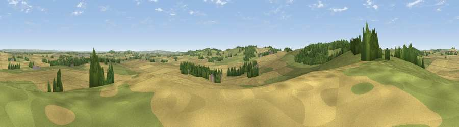

Suddern Hill
#21690 in England · top 24% of its area beats it · near Over WallopThe view, rendered

A 360° render of this exact spot computed from the terrain model, tree cover and land cover — summer colours, afternoon light, calibrated against photographs of famous viewpoints. Real trees, hedges and buildings will differ in detail.
The panorama
Grey silhouette: terrain skyline in each direction (720 bearings, Earth curvature and refraction included). Dashed green: skyline with trees (+15 m) and buildings (+8 m) as obstacles. Blue strip: how far the ground is visible on each bearing.
Where the view opens
Wedge length = distance to the farthest visible ground on that bearing (vegetation-aware). Rings at 10, 25 and 50 km.
What fills the view
54% cropland · 36% grassland · 9% woodland ·
Angular shares of the visible panorama (visual magnitude), not map area. Landscape diversity 0.42 (0–1 Shannon).
Key numbers
More beautiful places nearby
The staircase of upgrades: each row has a higher view potential than everything closer. Driving times are estimates from straight-line distance, calibrated against real road routing — check an actual route before setting out.
| Place | Direction | Drive | Score |
|---|---|---|---|
| Viewpoint near Over Wallop | WNW · 1 km | ~2 min | 51.9 |
| Tower Hill | WNW · 2 km | ~6 min | 56.0 |
| Kent's Wood | SSE · 3 km | ~8 min | 60.9 |
| Viewpoint near Grateley | N · 5 km | ~11 min | 61.1 |
| Viewpoint near Bulford | NW · 9 km | ~18 min | 70.3 |
| Gallows Down | NNE · 27 km | ~43 min | 75.6 |
| Beacon Hill | NE · 28 km | ~44 min | 76.7 |
| Martinsell viewpoint | NNW · 28 km | ~44 min | 77.3 |
51.13569, -1.62087 · source: osm peak · position refined by local search. Computed location — check access rights before visiting.